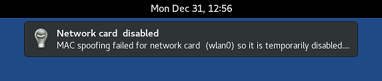
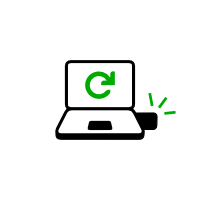
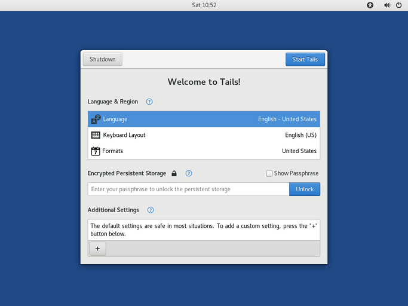

Test your Wi-Fi
Problems with Wi-Fi are unfortunately quite common in Tails and Linux in general. To test if your Wi-Fi interface works in Tails:
Open the system menu in the top-right corner:

Choose Wi-Fi Not Connected and then Select Network.
After establishing a connection to a local network, the Tor Connection assistant appears to help you connect to the Tor network.

If your Wi-Fi interface is not working, either:
There is no Wi-Fi option in the system menu:

The interface is disabled when starting Tails or when plugging in your USB Wi-Fi adapter:

In this case, you can disable MAC address anonymization to get your Wi-Fi interface to work in Tails. Disabling MAC address anonymization has security implications, so read carefully our documentation about MAC address anonymization before doing so.
To connect to the Internet, you can try to:
Use an Ethernet cable instead of Wi-Fi if possible. Wired interfaces work much more reliably than Wi-Fi in Tails.
Share the Wi-Fi or mobile data connection of your phone using a USB cable. Sharing a connection this way is called USB tethering.

See instructions for:
iPhones or iPads
Only sharing mobile data works on iPhones and iPads; sharing Wi-Fi does not work.
Tails cannot hide the information that identifies your phone on the local network. If you connect your phone to:
A Wi-Fi network, then the network will know the MAC address of your phone. This has security implications that are discussed in our documentation on MAC address anonymization. Some phones have a feature to hide the real MAC address of the phone.
A mobile data network, then the network will be able to know the identifier of your SIM card (IMSI) and also the serial number of your phone (IMEI).
Buy a USB Wi-Fi adapter that works in Tails:
Vendor Model Size Speed Price Buy offline Buy online Panda Wireless Ultra Nano 150 Mbit/s $12 No Amazon Panda Wireless PAU05 Small 300 Mbit/s $14 No Amazon If you find another USB Wi-Fi adapter that works in Tails, please let us know. You can write to sajolida@pimienta.org (private email).
Yay, you managed to start your new Tails on your computer!
If you want to save some of your documents and configuration in an encrypted storage on your new Tails USB stick, follow our instructions until the end. Otherwise, have a look at our final recommendations. final recommendations. final recommendations. final recommendations. final recommendations. final recommendations.
Create a Persistent Storage (optional)

You can optionally create an encrypted Persistent Storage in the remaining free space on your new Tails USB stick to store any of the following:
- Personal files
- Some settings
- Additional software
- Encryption keys
The data in the Persistent Storage:
- Remains available across separate working sessions.
- Is encrypted using a passphrase of your choice.
The Persistent Storage is not hidden. An attacker in possession of your USB stick can know that there is a Persistent Storage on it. Take into consideration that you can be forced or tricked to give out its passphrase.
It is possible to unlock the Persistent Storage from other operating systems. But, doing so might compromise the security provided by Tails.
For example, image thumbnails might be created and saved by the other operating system. Or, the contents of files might be indexed by the other operating system.
Other operating systems should probably not be trusted to handle sensitive information or leave no trace.
Create the Persistent Storage
Choose .
Specify a passphrase of your choice in both the Passphrase and Verify Passphrase text boxes.
We recommend choosing a long passphrase made of five to seven random words. Learn more.
Click on the Create button.
Wait for the creation to finish.
The list of features of the Persistent Storage appears. Each feature corresponds to a set of files or settings that can be saved in the Persistent Storage.
We recommend you to only turn on the Personal Data feature for the time being. You can turn on more features later on according to your needs.
Click Save.

Restart and unlock the Persistent Storage
Shut down the computer and restart on your new Tails USB stick.
In the Welcome Screen:

Select your language and keyboard layout in the Language & Region section.
In the Encrypted Persistent Storage section, enter your passphrase and click Unlock to unlock the Persistent Storage for the current working session.
Click Start Tails.
After 15–30 seconds, the Tails desktop appears.
You can now save your personal files and working documents in the Persistent folder. To open the Persistent folder choose .
You now have a complete Tails, congrats!
Final recommendations
Tails does not protect you from everything! Have a look at our warnings.
You should regularly make a backup of your Persistent Storage in case your Tails USB stick becomes lost or damaged.
We hope you enjoy using Tails :)